Eindexamen
Debriefing
Wat is het onderwerp?
Het nieuws is door de geschiedenis heen razendsnel geworden zodat het bijna onmogelijk wordt voor journalisten om naar de kern van de oorzaak te kijken, waardoor het nieuws misschien alleen uit is op sensatie. Dit terwijl het imago van de journalist nog altijd gezien wordt als onafhankelijk.
Waar vroeger de journalisten de personen waren die de bronnen van het nieuws controleerde voordat het gepubliceerd werd. Is het tegenwoordig voor iedereen mogelijk om nieuws de wereld in te gooien zonder dat deze op feiten gebaseerd hoeft te zijn. Fictie en non-fictie komen steeds dichter bij elkaar in het nieuws.
Wat moet het communiceren?
Wat ik met dit project wil vertellen is dat het nieuws anders is dan het zich voordoet. Dat het nieuws grotendeels bepaald wordt door kijk- en verkoopcijfers. Hierdoor grijpt het nieuws veel sneller naar berichten die gebaseerd zijn op geruchten dan op feiten. Juist dit laatste wil ik met mijn project aantonen.
Hoe ga ik dit communiceren
In dit project wordt er een realtie tussen fictie en non-fictie in nieuws gecreeërd. Wanneer is nieuws op geruchten en wanneer is het op feiten gebasseerd? Door nieuwsfeeds van verschillende bronnen (zoals: Reuters of Twitter) te verzamelen en te ordenen, zou er een overzichtelijke "infographic" moeten ontstaan.
Voorstellen
- Subjectief nieuws maken: 'The War of the Worlds', 'Yes men'-NewYork Times
- Systeem wat het subjectieve nieuws toont
- Andere manier van de digitale krant of digitale nieuwsbeleving
- Verschillende ramen, verschillende waarheden
- Dynamische newsfeeds
- Nieuws vs Religie
- Verschillende newsfeeds combineren, feiten en geruchten combineren
- Dramatisch nieuws met humor combineren
- Nep nieuws creeren -> nieuws manipuleren
- Anti Westerse wereld nieuws
Wat is je eigen motivatie?
Ik heb het altijd fascinerend gevonden hoe we over andere mensen denke; hoe we een bepaald beeld van andere mensen in ons hoofd hebben. Ik wil graag weten hoe deze beelden gevormd worden. De meeste informatie van de wereld krijgen we via het nieuws te zien, maar wat als een groot deel van deze informatie onjuist is? Hierdoor zijn ten onrechte mensen het slachtoffer van een verkeerd beeld wat van hen gemaakt is. Hoe kan het dat het nieuws, wat zich voordoet als een onafhankelijk medium, onjuiste informatie de wereld in brengen, terwijl het weet dat ze ontzettend veel mensen kunnen beinvloeden. Ik vind dat je een bepaalde verantwoording hebt als je een miljoenenpubliek hebt.
Wat is het maatschappelijk belang?
Doordat de nieuwsmedia zich objectief voordoen, geloofd het merendeel van de maatschappij in het beeld wat ze via deze media te zien krijgen. Ik vindt dat iedereen recht heeft op eerlijke informatie, informatie dat het totaal plaatje weergeeft. Dit betekend berichtgeving wat gebasseerd is op feiten en waarbij twee of meerdere kanten van zaken tegen het licht wordt gehouden.
Is het wel innovatief?
Er wordt nauwelijks tot niet gekeken naar de waarheid van de berichtgeving van de nieuwsmedia. Juist doormiddel van dit project wil ik dit onderzoeken. Door dit onderzoek wil ik mensen bewuster naar het nieuws laten kijken. Hierdoor zou er een nieuwe manier van nieuwsvergaring en berichtgeving kunnen ontstaan.
Deadline
- Generale Dog&Pony - 16 februari
- Dog & Pony - 3 maart
- Collectieve Werkbespreking - 31 maart
- Groen licht presentatie - 18 mei
- Eindexamen - 24 juni
Inspiratie


 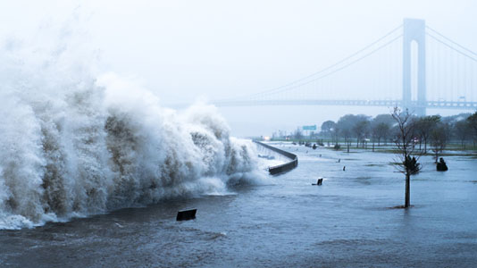
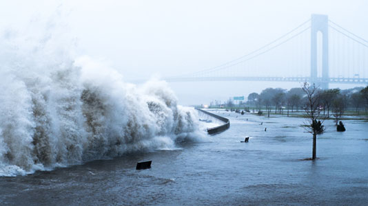
 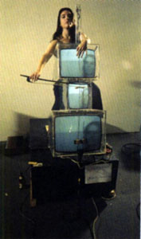
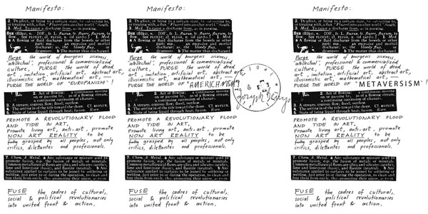
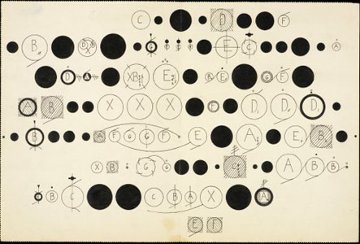
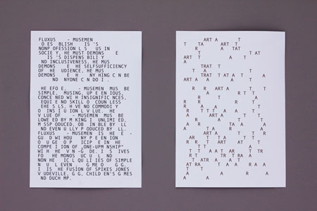
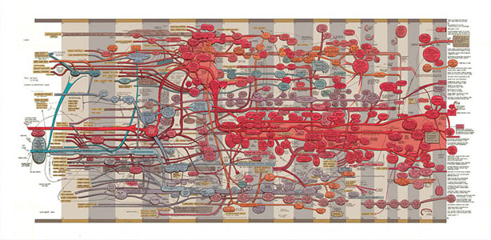
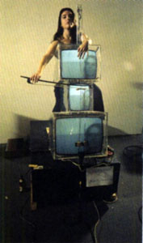
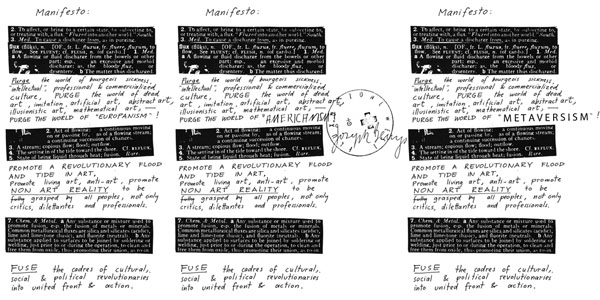
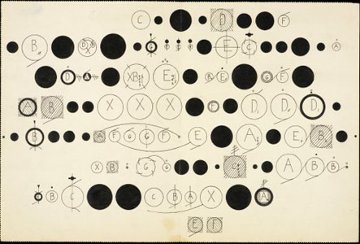
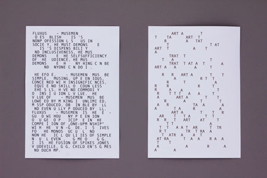
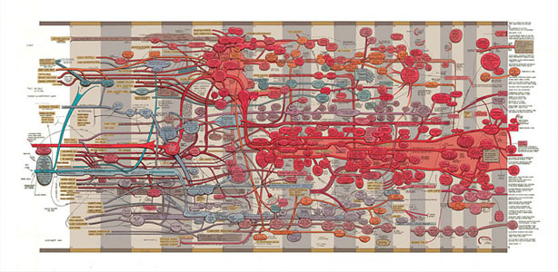
 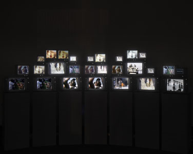
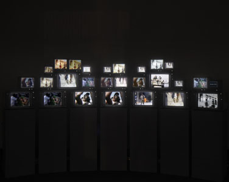

 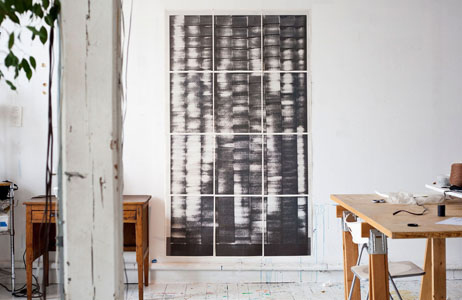
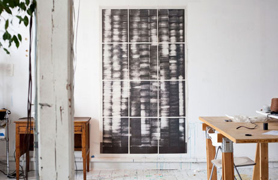

 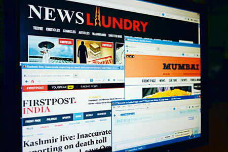
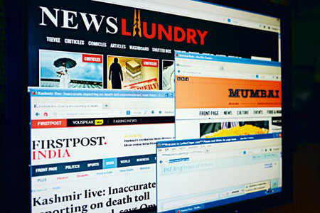


 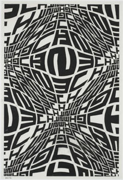
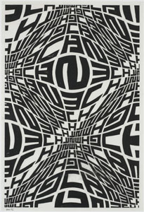
 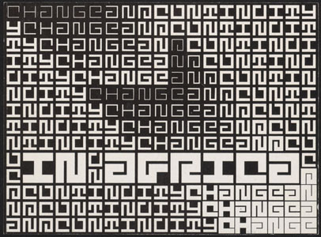
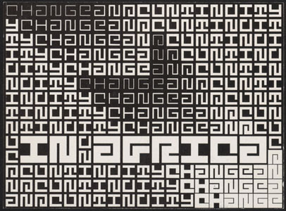
 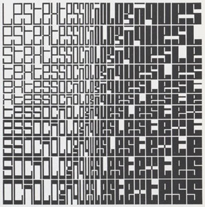
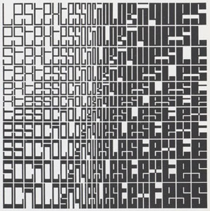

 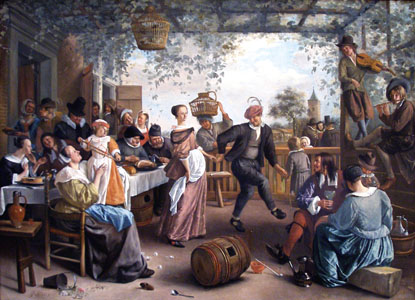
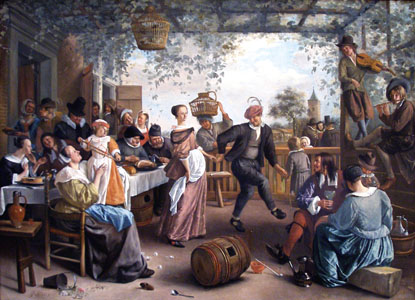
 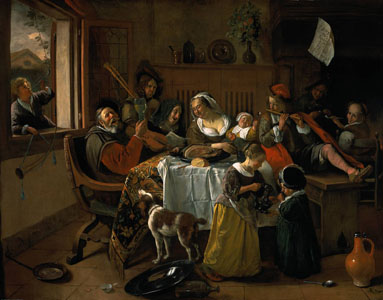
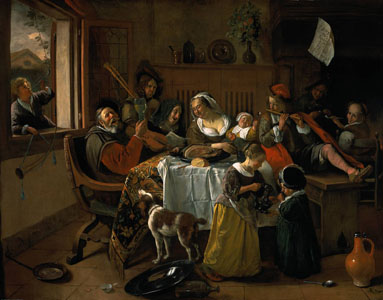
 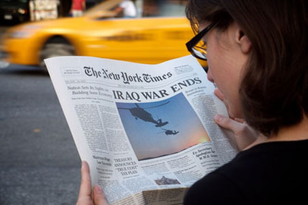
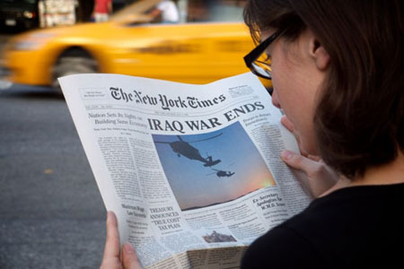
 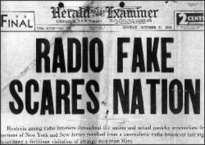
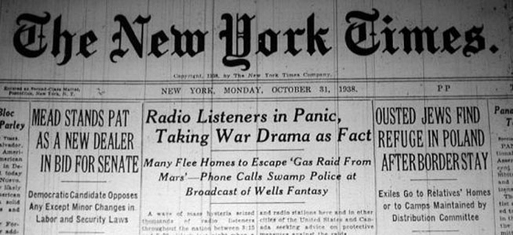
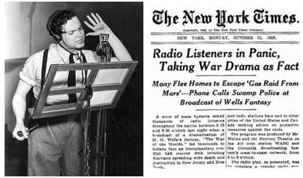
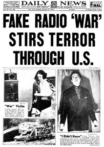
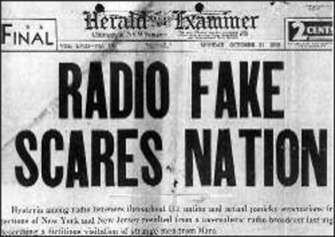
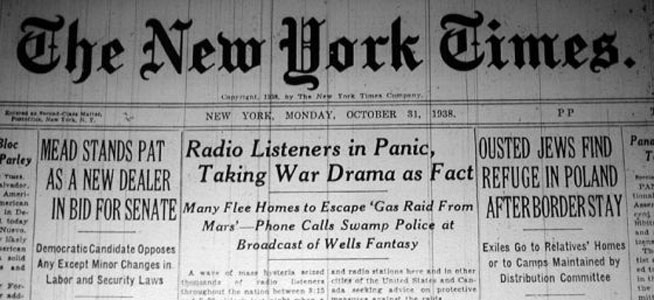
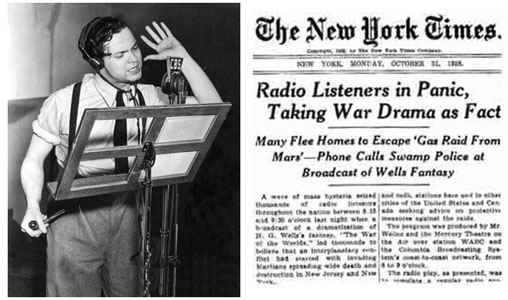
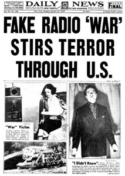